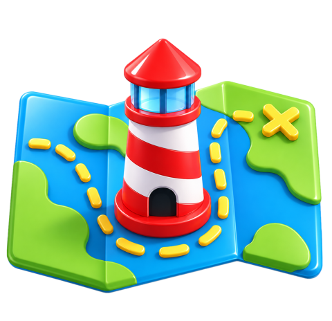
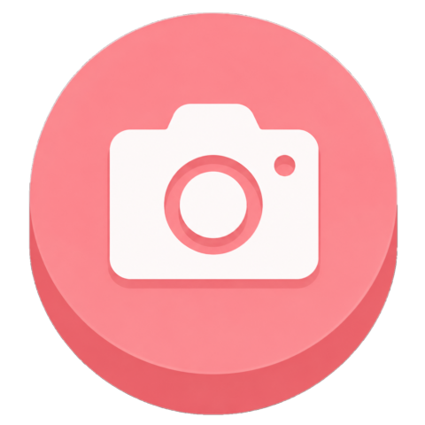
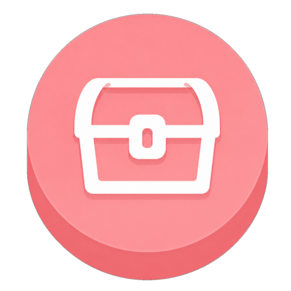
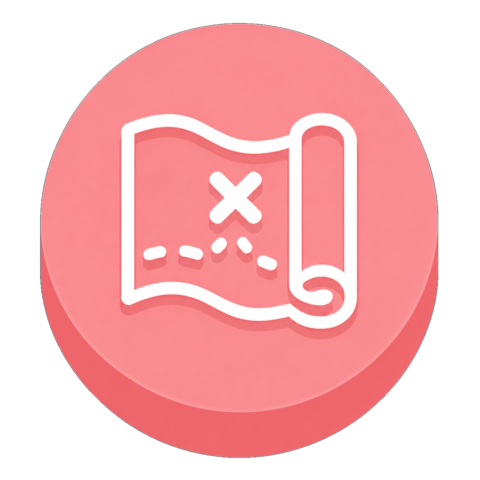

등대 위치
미션 안내
사진 후기



MK_10 · 2025.10.18 오후 2:33
사진 영역 1
1/1
# 등대스탬프투어
# 오동도등대
오동도등대 스탬프투어 첫번째 시작 기념
푸른바다 · 2025.11.09 오전 7:18
사진 영역 2
1/1
# 등대스탬프투어
# 산지등대
바다와 함께 AR 캐릭터 인증 완료!
홈
스탬프북
안내
X
미션 제목
미션 바로가기